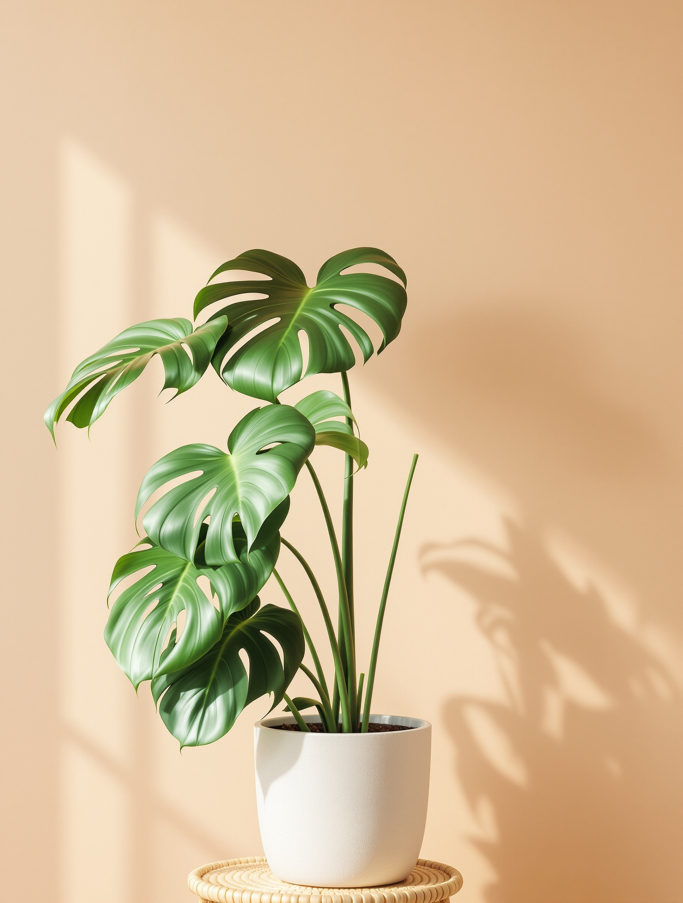
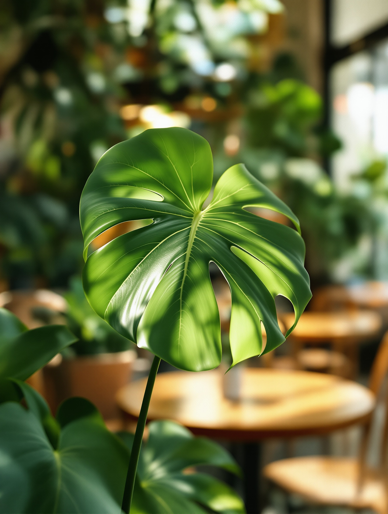
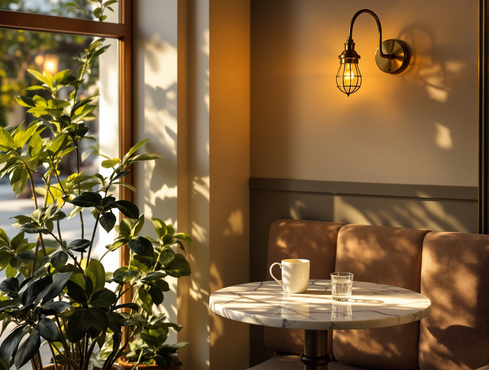
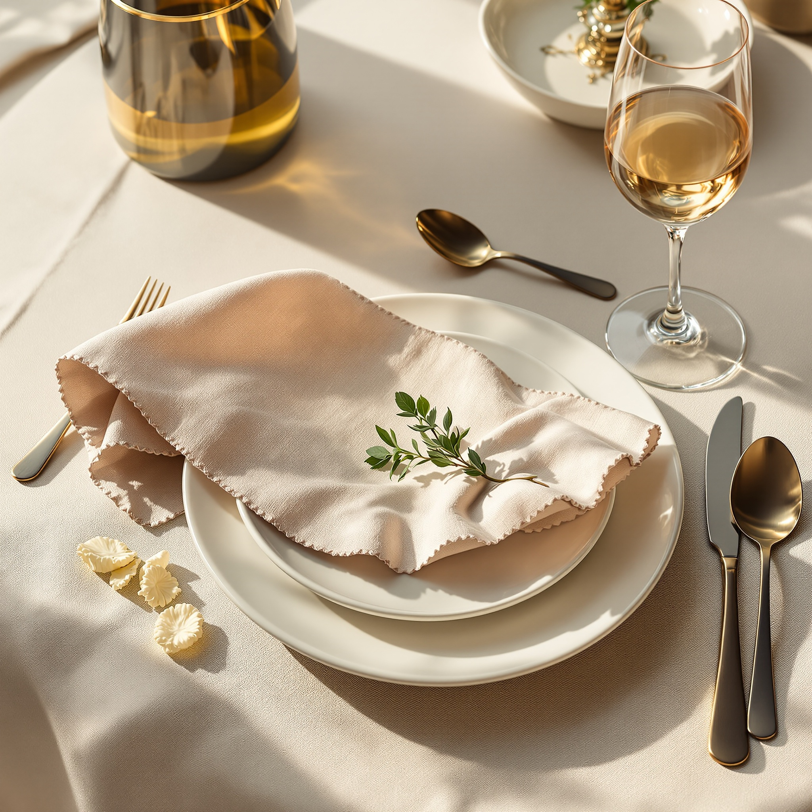
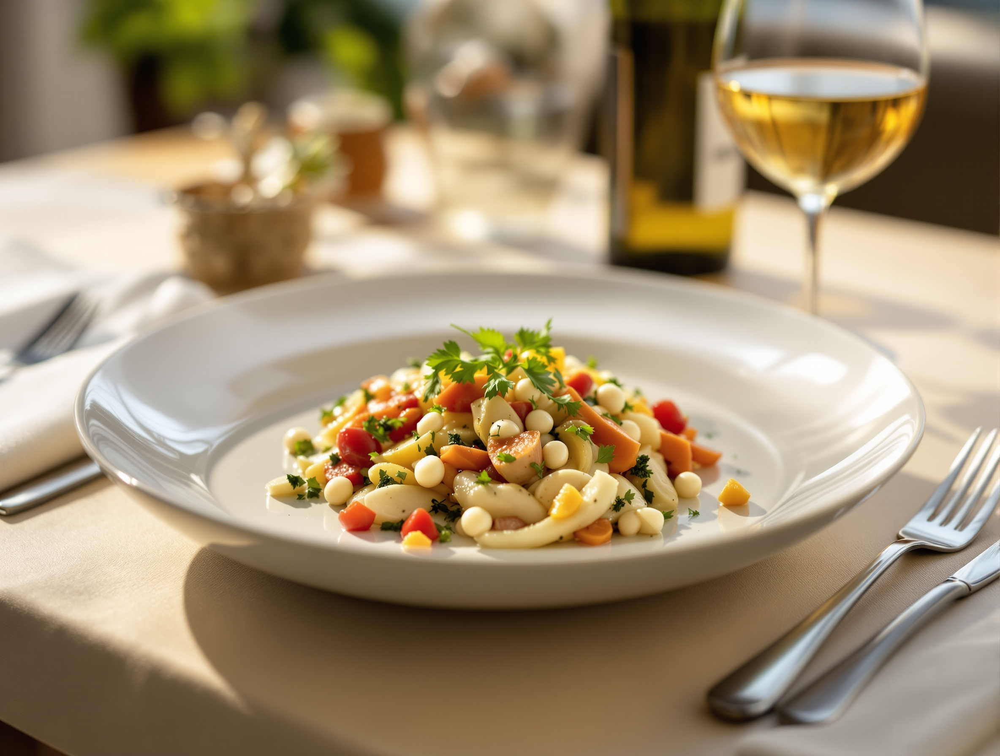
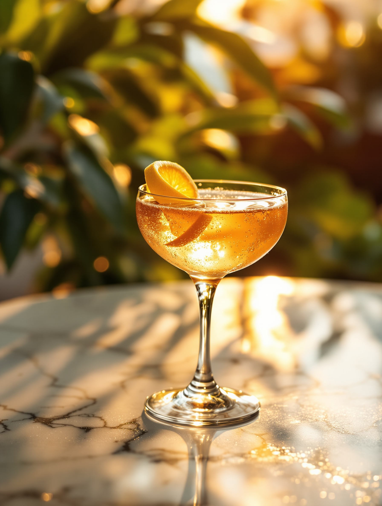
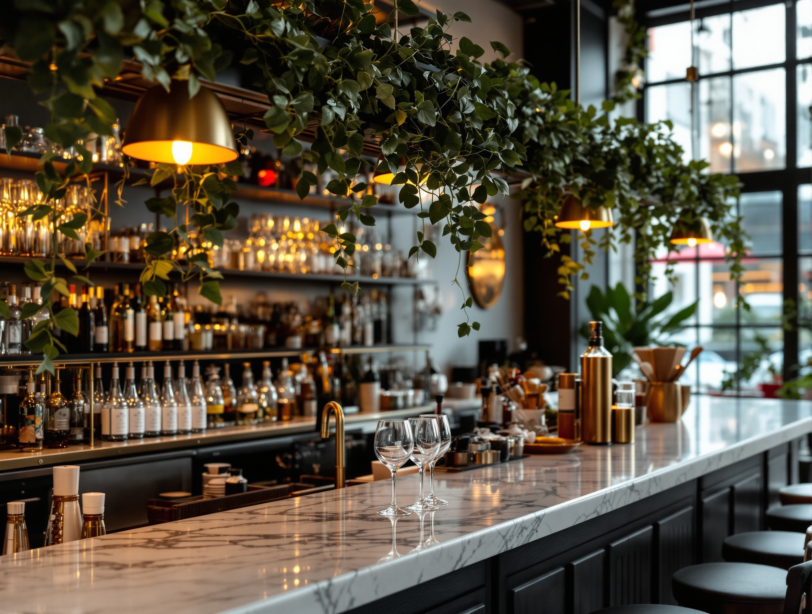
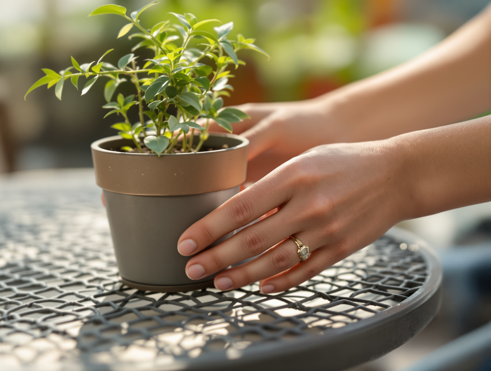
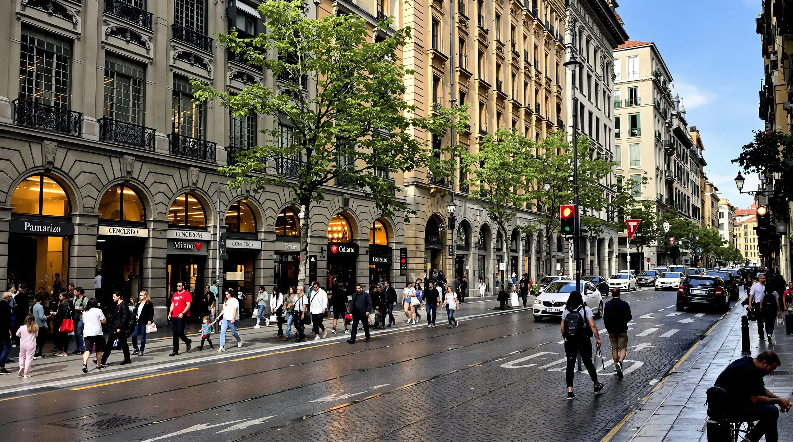
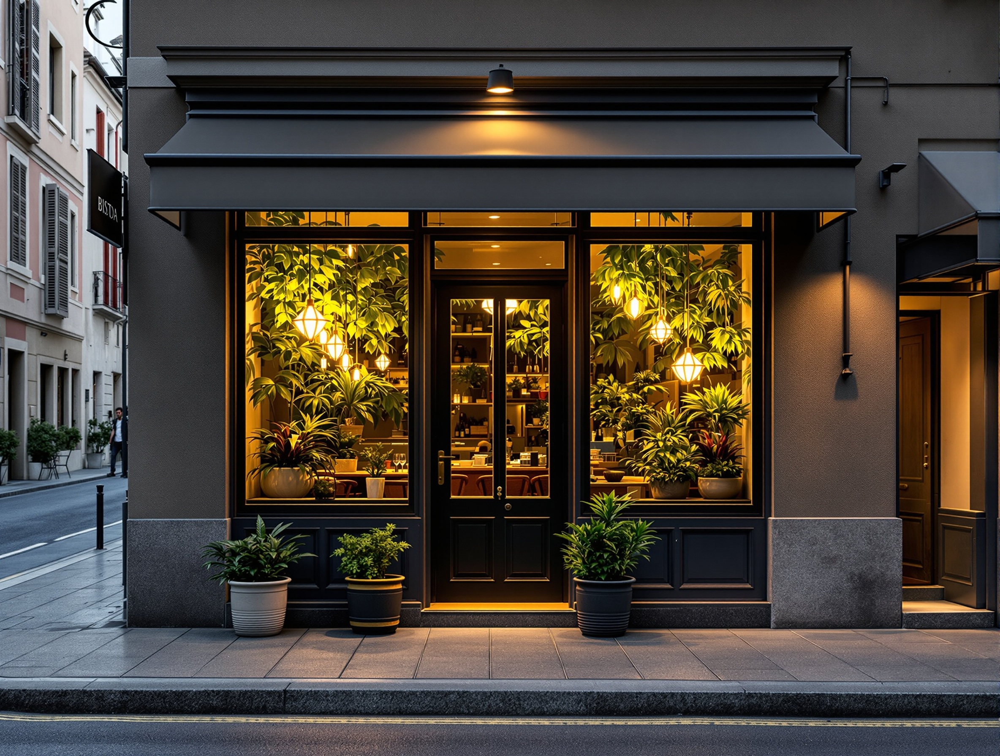

N. I
Monstera
Monstera deliciosaLe foglie larghe e traforate che fanno da soffitto verde sopra i tavoli in fondo alla sala.
Porta Venezia · Milano
Una sala verde a Porta Venezia. Piante vere intorno a ogni tavolo. Luce soffusa, cucina di bistrot. Un piccolo giardino in cui cenare.

La stanza è il motivo per venire.
Non è un bistrot con qualche pianta sul davanzale. È una sala verde intorno a ogni tavolo: monstera, felci e foglie che scendono dagli scaffali, con la luce soffusa che filtra tra le piante. I tavoli stanno dentro il verde, non davanti a un muro.
Ci si siede, la città resta fuori. È il posto giusto per una cena tranquilla o per due parole senza fretta.


Cucina di bistrot, semplice e curata. Poche cose fatte bene, ingredienti di stagione e un filo di verde anche nel piatto. Impiattiamo con cura, senza eccessi.
Il menù cambia con quello che troviamo, quindi preferiamo raccontarvelo di persona: chiamateci e vi diciamo cosa c'è oggi in sala.

Prima di cena la luce si abbassa e la sala diventa calda. Un aperitivo tra le piante è il modo più semplice per conoscerci, e la scusa migliore per fermarsi.
Un tavolo, un calice, la luce soffusa. Si beve fino alle 22 — passate presto e restate quanto volete.


L'indice della sala
Le piante non sono arredo. Le scegliamo e le curiamo una a una. Ecco tre esemplari della sala, come in un vecchio erbario.

Prenotare è semplice. Chiamateci e vi troviamo il tavolo giusto — per due o per una tavolata. Se volete l'angolo tra le piante, ditecelo prima: teniamo da parte quello.
Per l'aperitivo di solito basta passare, ma di sera la sala è piccola: una telefonata vi assicura il posto.


Viale Vittorio Veneto 2
Milano · Porta Venezia
Siamo ai piedi di Porta Venezia, a pochi passi dai Giardini. Facile da raggiungere in metro o a piedi, facile da trovare: cercate le vetrate piene di verde.
Una media costante di 4,0 su Google, tenuta negli anni. Non è un picco: è il segno di una sala che resta sé stessa ogni sera.
Chi viene torna soprattutto per due cose — il verde della sala e la calma. È la stessa cosa che raccontiamo noi, detta da chi ci ha già scelto.
Riportiamo solo il voto reale di Google, senza citazioni inventate.